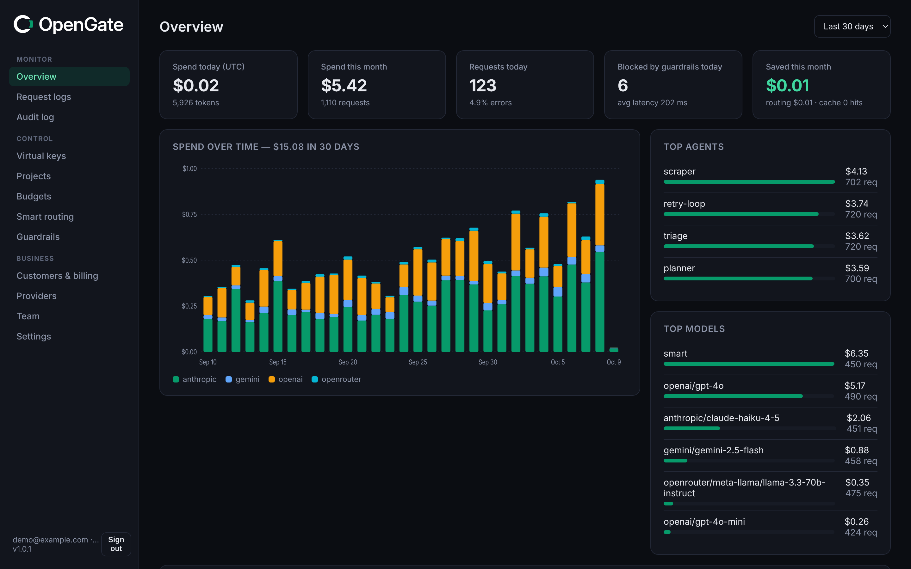

Hard budgets, kill switch
Daily, monthly and lifetime USD limits plus RPM per key, agent or project. The worst-case cost is reserved atomically before the call. One click kills a key and aborts its in-flight streams.
Independent · self-hosted · open source (Apache-2.0)
The independent AI gateway, not owned by a payment company or a cloud vendor. OpenGate runs on your infrastructure between your agents and OpenAI, Anthropic, Gemini and OpenRouter. Every agent gets a hard budget, every key has a kill switch, and every request is priced before it leaves your network.

The AI gateway holds every provider key, sees every prompt and decides where every token goes. Independent options are consolidating: on Aug 19, 2026 Stripe announced it has agreed to acquire OpenRouter. OpenGate is Apache-2.0 software you run yourself, with no phone-home, no telemetry, and no vendor between you and your models.
retries the same tool call 4,000 times overnight. You find out from the invoice.
in a public repo gets drained in hours, and every agent shares the same provider key.
with hundreds of transitive Python dependencies sits on the path of every prompt and every key.
Daily, monthly and lifetime USD limits plus RPM per key, agent or project. The worst-case cost is reserved atomically before the call. One click kills a key and aborts its in-flight streams.
Ordered fallbacks per model or alias with backoff on 429, 5xx and timeouts. OpenAI, Anthropic (full Messages translation, including streaming), Gemini and OpenRouter.
Route by prompt length, tags, headers or cost ceiling, or send model: "auto" and get the cheapest model that meets the request's difficulty tier. The dashboard shows what you saved.
Redact or block emails, phone numbers, Luhn-valid cards, IBANs, SSNs and SINs, API keys and private keys, in prompts and responses. Prompt-injection heuristics log or block.
Attribute usage to end customers, apply markup rules, export monthly CSVs and push usage to Stripe Billing Meters automatically.
Organizations, argon2id accounts, owner, admin, member and viewer roles, invites, and an append-only audit log. Prometheus metrics, JSON logs, SQLite or Postgres.
A gateway holds every provider key you own and sees every prompt. So OpenGate is built to be audited, not trusted.
-trimpath, shipped as a distroless non-root image.x/crypto. That's the list. No PyPI supply chain to compromise.# go.mod: the whole dependency surface require ( github.com/jackc/pgx/v5 golang.org/x/crypto gopkg.in/yaml.v3 modernc.org/sqlite ) # verify what you run $ go mod verify all modules verified
Draft pricing. Cloud plans aren't available yet, and prices and limits may change before launch.
Free
Apache-2.0, forever
$49/mo
Draft · managed by us
Contact us
Draft
No API keys yet? make demo runs a mock provider with seeded traffic.
# 1. run $ eval "$(opengate keygen | sed 's/^/export /')" $ export OPENAI_API_KEY=sk-... $ opengate serve # 2. a key for one agent, capped at $5/day $ curl -s localhost:8080/admin/api/keys \ -H "Authorization: Bearer $OPENGATE_ADMIN_TOKEN" \ -d '{"name":"planner","agent":"planner","limits":{"daily_usd":5}}' # 3. use it like OpenAI client = OpenAI(base_url="http://localhost:8080/v1", api_key="og-...")
OpenRouter is a hosted service, so your traffic goes through a third party (Stripe announced on Aug 19, 2026 that it has agreed to acquire it). LiteLLM is a large Python project. OpenGate is a small, independent, self-hosted Go binary focused on spend control: budgets are enforced before a request leaves, not reported afterwards. Migration guides for LiteLLM and Helicone are in the docs.
No. Change the base URL and API key of any OpenAI SDK. Models are addressed as provider/model, for example anthropic/claude-sonnet-4-5, or through aliases you define. Chat Completions (streaming included), Embeddings and the Responses API are supported.
Costs come from the provider's usage fields and an editable price table, including cache-read and cache-write tokens. Before each call the worst case (max_tokens × price) is reserved, so concurrent requests can't overshoot a limit on one instance.
Not by default. Only metadata (model, tokens, cost, latency, status) is logged. Body logging is opt-in per project and passes through the redaction guardrails first.
Yes, on Postgres. Rate limits, spend and kill switches are shared through the database. Budget reservations are per process, so very tight limits are best enforced by a single instance (documented in the security model).
OpenGate Cloud is planned. Pricing above is a draft. Self-hosting is and will stay free.